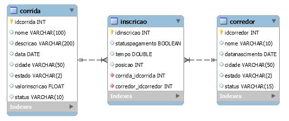

| URI | GET | POST | PUT | DELETE |
| \corridas | Retorna a lista de Corridas | Cria uma Corrida | Não usado | Não usado (apagaria todas as Corridas) |
| \corridas\[id] | Retorna os dados dessa Corrida (*1) | Não usado | Atualiza os dados dessa Corrida | Apaga essa Corrida |
| \corredores | Volta a lista de Corredores | Cria um Corredor | Não usado | Não usado (apagaria todos os Corredores) |
| \corredores\[id] | Volta os dados desse Corredor (*1) | Não usado | Atualiza os dados desse Corredor | Apaga esse Corredor |
| \corridas\[id]\corredores | Lista de Corredores inscritos nessa Corrida | Não usado | Não usado | Não usado (removeria todas as Inscrições de Corredores nessa Corrida) |
| \corredores\[id]\corridas | Volta a lista de Corridas nas quais esse Corredor está inscrito | Não usado | Não usado | Não usado (removeria todas as Inscrições desse Corredor em qualquer Corrida) |
|
\corredores\[id]\corridas\[id] \corridas\[id]\corredores\[id] |
Volta os dados da Inscrição desse Corredor nessa Corrida (*1) | Cria uma Inscrição para um Corredor nessa Corrida (*2) | Atualiza os dados dessa Inscrição | Remove essa Inscrição |
(*1) Caso não seja encontrada a entidade com o ID informado, será retornado Erro 404.
(*2) A inscrição é efetuada sem receber nenhum parâmetro. É registrada sempre com o status de pagamento “false” (supondo que a inscrição é criada sempre antes da confirmação de pagamento) e os demais dados zerados (dados referentes à participação do corredor nessa corrida).